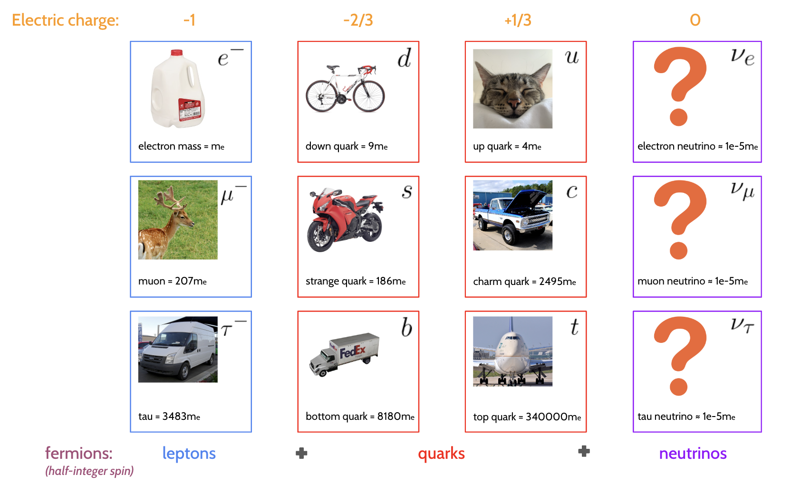
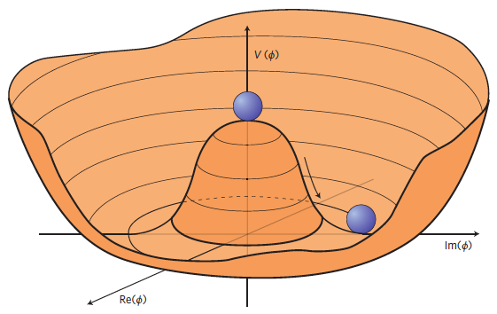
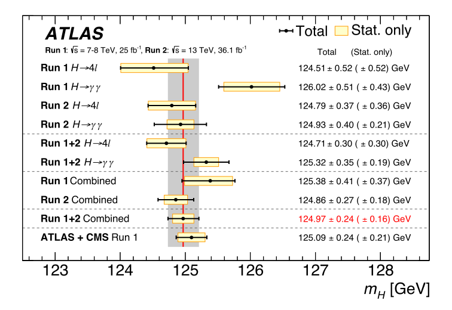
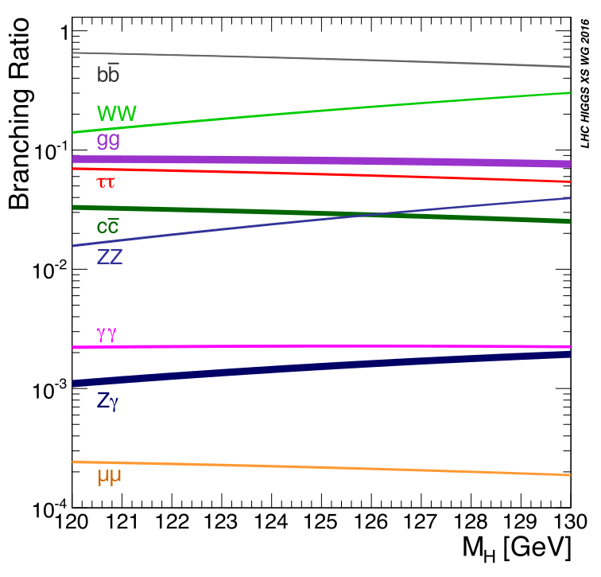
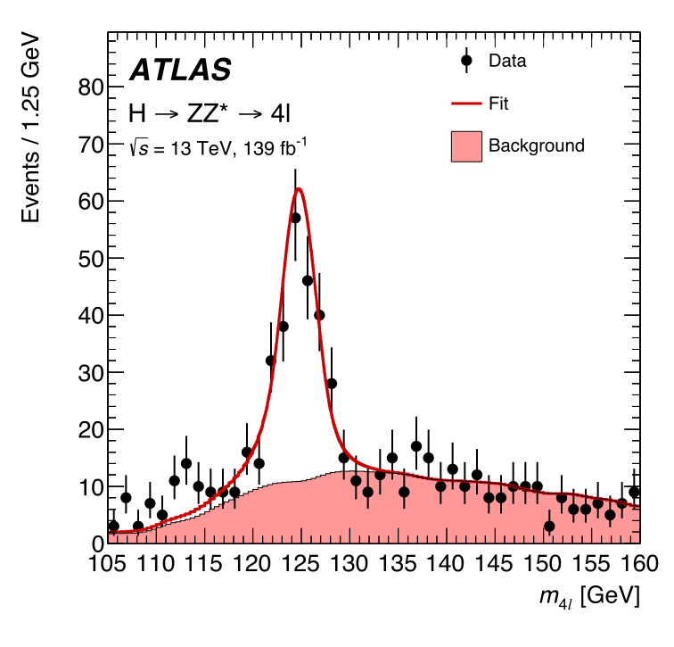
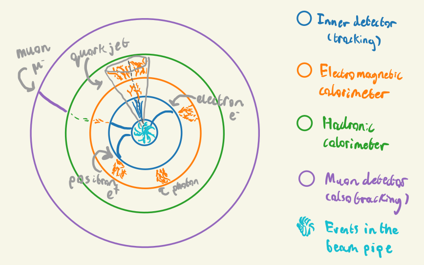

graph TB;
A[Underlying physics processes]
B[Detector smearing]
C[Digitization]
D[Reconstruction]
E[Data analysis]
F[Real collision data!]
subgraph simulation
A-->B-->C
end
C-->D-->E
F-->D
What makes up you and me? How do interactions on the smallest scales affect the way the universe was made and how it will end? Why does anything exist at all? Is anyone even reading this? If they do, but no-one is there to see them, will they make a sound?
At least two of these existential questions are explored by the scientific discipline known as high-energy physics (HEP). This term encompasses things like particle physics, astrophysics, and cosmology, which are a mix of studying things at the largest and smallest possible scales, and have surprisingly large interplay. We focus here on particle physics, which looks at the very, very small.
An innumerable number of particle physics results in the last 10 years or so have shown no signs of deviating from the predictions made from the Standard Model of particle physics, a theory proposed and developed by many scientists over many years (Oerter 2006). It’s been extraordinarily robust to experiments that have probed it thus far, and it is very much the norm for any budding physicist to pessimistically assume any search to uncover new physics will state “no excesses were found”, with the result being “consistent with the Standard Model prediction”. We go over an extremely brief overview of this ludicrously successful model in the following paragraphs, which are largely based on (Tong 2022) and (Buckley, White, and White 2021).
The Standard Model is a type of quantum field theory, which operates using a fundamental object defined over all of time and space called a field. These fields are described by equations that can be treated as waves, which are restricted to travel in discrete quanta of energy. These quanta are generally what we’ve been calling “particles”, and also serve to mediate what we know as forces. Said in another way, everything that we call a particle is actually an oscillation of a field, where the field is the fundamental object as opposed to the particle. Nevertheless, the following conversation is mostly had from a particle-first perspective in order to salvage some intuition, even if it breaks down under a fine enough microscope (somewhat literally – we’ll get to this in due course). So, even though we won’t mention them too much, do keep in the back of your mind that everything that manifests here is actually a result of these fields interacting in some way1.
Now, as far as I have checked, I am particles. So are you. Which particles are we? Textbooks would have us believe that we’re made of “atoms”, which in turn are made up of protons, neutrons, and electrons. Are they made up of their own “atoms” too? In a sense; the electron is irreducible as far as we know, but protons and neutrons are composed of constituents known as quarks, which again, don’t seem to be further reducible (at least from the perspective of the Standard Model). These quarks come in two “flavors”: the up quark \(u\) and the down quark \(d\). There’s no particular reason for these names other than to make it neat to tell apart quarks in a linguistically pleasing way. Zooming out again to an atomic scale, the proton has a quark composition of \(uud\) (two up quarks and one down quark), and a neutron has \(udd\) (two down, one up)2.
One last ingredient we’ll add here to complete this set of particles is the neutrino: an electrically neutral particle with extremely low mass. How do we even know it exists if it doesn’t noticeably interact with electromagnetic or gravitational forces? While not responsible for building up matter like me and you, it plays a role when matter decays, for instance, and was postulated by Wolfgang Pauli in 1930 to make up for losses in energy and momentum when atoms undergo beta decay (e.g. for a neutron to decay into a proton, it will emit an electron and a neutrino). Another fun neutrino fact is that 1 billion of them have probably passed through you as you finish this paragraph, mostly coming from nuclear interactions in the sun.
These four particles complete the first generation: \(e^-\), \(d\), \(u\), and \(\nu_e\). As the name implies, there are additional generations – exactly two more, in fact, which is a stringent requirement of the mathematics of quantum field theory (though experiment could easily refute this in future). These generations are analogous to the first, each with something electron-like, two quarks, and a neutrino, with the generations differing by mass (abd name) alone. The second generation contains the muon \(\mu^-\), the strange quark \(s\), the charm quark \(c\), and the muon neutrino \(\nu_\mu\), while the third contains the tauon (or just tau) \(\tau\), the bottom quark \(b\), the top quark \(t\), and the tau neutrino \(\nu_\tau\). The full spread of these particles is shown in Figure 1.1, including details on the charges and relative masses (assuming the electron mass \(m_e = 0.511\) \(\text{MeV}\) was actually 1 kg). And no, we have no idea why the top quark is a Big Chungus3.

Particles carry an intrinsic angular momentum, known as spin. If you want a mental picture, this can be thought of to some degree as the particles literally spinning in place, but it’s of course more a property of the field than the particles themselves. The main thing to note about spin is that it’s quantized into half-integer amounts (e.g. 1/2, 1, 1+1/2 etc.), and the sign indicates the direction of that spin. Importantly, particles with half-integer spin cannot occupy the same location, which is known as the Fermi exclusion principle. We can also define the notion of handedness: a (massless) particle is left-handed if its spin vector and momentum vector are pointing in the same direction, and right handed if they’re pointing opposite directions.
We come to yet another notion of particles: antimatter. Each particle in the table above has an antimatter counterpart, denoted either with a bar over the letter for quarks and neutrinos (\(\bar{u}, \bar{\nu_\mu}\)) and through flipping the sign of the charge for leptons (such as the positron \(e^+\)). This is just notation; antimatter is a flipping of the sign of some of the basic properties of the particle, namely the electric charge and the handedness. We note here that whether the neutrino is its own antiparticle is a subject up for debate; it is unknown if right-handed neutrinos (or left-handed antineutrinos) exist at all.
When two particles feel a force, it’s often said that those particles undergo the exchange of the relevant particle to that force, i.e. there’s a mediator for every force in the form of a particle. But in my mind, this leads to weird images of some particles throwing other particles off one another, which is then somehow meant to manifest as something like gravity or magnetic attraction, neither of which seem intuitive4. Nevertheless, it remains a useful construct to think about these mediator particles from the perspective of the underlying mathematics. These particles that mediate forces carry integer spin, and are called bosons for this reason. Here are the main examples:
To top off our description of the Standard Model, we mention the Higgs field, with a quantum of energy known as the Higgs boson. The field (and particle) are the only ones in the Standard Model without any spin, which is what we call a scalar field. This property leads to a surprising fact: the value of the Higgs field can be non-zero in the vacuum. The reason for this is due to the shape of the potential energy of the Higgs field, which can be loosely thought of as how much energy the Higgs field needs to have to take on a certain value. In the Standard Model, this potential \(V(\phi)\), where \(\phi\) is the value of the Higgs field, has the relatively simple form
\[ V(\phi)=a|\phi|^2+b|\phi|^4~. \tag{1.1}\]
The Standard Model predicts the shape of this potential as shown in Figure 1.2, which is only possible with \(a < 0\) and \(b > 0\). In the absence of anything else, i.e. in the vacuum, the Higgs field will sit somewhere at the minima of this potential. But as shown in Figure 1.2, the values of the field in this valley are non-zero.

A consequence of the Higgs field being “turned on” in the vacuum with some value of energy is that it is responsible for giving fundamental particles mass. Here, I stress the word “fundamental” – the mass of composite particles made of quarks (or hadrons) is actually due to large fluctuations of the associated quantum fields, where the Higgs-given masses are a negligible contribution (the mass of the proton is about 1836\(m_e\), which is clearly larger than two up quarks and one down quark from Figure 1.1). An often-quoted analogy that holds very delicately is treating the Higgs field as a thick, viscous liquid (think Marmite), and particles then gain mass as they move through it, with the amount of resistance depending somehow on the type of particle. This interaction is technically a fifth force called the Higgs force, but it’s not often quoted as such.
The particle discovered by the ATLAS and CMS experiments at CERN in 2012 is widely believed to represent the Higgs boson as proposed by the Standard Model (ATLAS-Collaboration 2012). This is largely due to the mass measured for the Higgs boson being consistent with the Standard Model prediction of \(m_H \approx 125\) \(\text{GeV}\). For something fairly up-to-date, a summary of Higgs mass measurements can be found in Figure 1.3. However, it is precisely the fact that the Higgs is this mass that has left the field of particle physics in a bit of a muddle. We’ll touch on this at the end of the chapter.

For all this talk of the Higgs boson, it doesn’t stop around for long. It has a lifetime of \(1.6 \times 10^{-22}\) seconds, which is a number smaller than a second by a factor of around a billion squared. The result of this is that the Higgs will decay into other particles nearly instantly within our particle detectors – we’re then left to chase its shadow. The Higgs can decay into many different particle types, provided, of course, their total mass does not exceed that of the Higgs (conservation of energy). However, it is more likely to decay to some things than others. These different probabilities for particles to decay into each variety are known as branching ratios, with the Higgs’ most common decay being to two \(b\)-quarks. We can see these branching ratios as a function of the Higgs mass in Figure 1.4, where we have a little look either side of the measured mass from our experiments.

A general note on decays: you’ll see decays to two quarks written sometimes as \(qq\), \(bb\) etc, but any decay to two identical quarks means one of them is an anti-quark, for reasons of conservation of charge amongst other things. So \(H\rightarrow bb\) means \(H\rightarrow b\bar{b}\), just in case I’m not explicit in future.
Due to the equivalence of mass and energy (think \(E=mc^2\)), one could imagine the ability to create things with large mass, if we had enough energy to do so. That is precisely the idea behind particle colliders: we give particles a large amount of energy (i.e. they’re traveling close to the speed of light), and then collide them so that they interact. These interactions, with sufficient energy, can then lead to the creation of heavier particles, provided that particle has mass that’s less than the energy at which the particles that produced it collided. We call this energy the center-of-mass energy, which is around \(13.6 \,\text{TeV}\) for run 3 of the Large Hadron Collider. This process of collision is usually done through charged particles such as protons, because we can accelerate them using electric and magnetic fields to speeds that can produce energies like this.
How do we detect if we produced the particles we want? We can do this by analyzing data from the collision; for that, we need to surround areas of our collider with detectors, which collect all the by-products that splash out from the center of the collision. These detectors, along with some input from software, have the ability to reconstruct the tracks that (charged) particles leave in the detector, from which one can determine properties like the charge from the way the track curves. Additionally, there are modules that can measure the energy deposited from particles emerging from the collisions, which can be placed at different distances to measure particles with different lifetimes (short-lived particles that decay quickly won’t ever make it past a certain distance before being totally absorbed by the detector itself).
Given this, we’ll go over some of the properties that particles have while moving, and why they’re useful for looking at the validity of physical theories.
From here, we will use the convention of natural units, which essentially absorbs constant factors of the speed of light \(c\) and the Planck constant \(\bar{h}\) into the units chosen. You will then see quantities quoted in electron volts (\(\text{eV}\)) with different prefactors as usual for the size (\(\text{GeV}\) = giga electron volts = \(1\times 10^9\) \(\text{eV}\) etc.). \(1\,\text{eV}\) is a very small amount of energy indeed (\(1.6 \times 10^{-19}\) Joules), with the center-of-mass energy of the Large Hadron Collider being \(13.6\) TeV – still much less than a sandwich (but I would support building a sandwich collider; see (Doglioni et al. 2019) for an attempt of this nature, though physics results may vary).
We start with relativistic kinematics, i.e. how things move when they’re nearly at the speed of light. Objects like this are best described by talking about spacetime, which imparts an extra temporal dimension to the traditional three-vector for position in the form of a four-vector:
\[ x^\mu = (t, x, y, z) = (x_0, x_1, x_2, x_3)~. \]
Equivalently, we can drop the index \(\mu\) from upper to lower, and get the equivalent \(x_\mu = (t, -x, -y, -z) = (x_0, -x_1, -x_2, -x_3)\) (choice of convention). This allows for the compact notation of dot products between four-vectors using summation notation:
\[ x^\mu y_\mu = y_\mu x^\mu = x_0y_0 - [x_1y_1 + x_2y_2 + x_3y_3]~. \tag{1.2}\]
This quantity is important, as it can be shown to be Lorentz-invariant, which means the value remains the same even if we change the reference frame we’re in (i.e. we move in some way relative to the object). Using the four-vector for position, we can define a four-momentum:
\[ p^\mu = m \frac{dx^\mu}{d\tau}~, \]
where \(m\) is the object rest mass, and \(\tau\) is the proper time, defined by applying the relativistic factor \(\gamma\) to time as
\[ t = \gamma\tau;~~~ \gamma = \frac{1}{\sqrt{1-v^2}} \]
for magnitude of the object’s three-velocity \(v = |\mathbf{v}|\). This leads to an equivalent notation of
\[ p^\mu = (E, \mathbf{p}); ~~~ E=\gamma m,~\mathbf{p}=\gamma m \mathbf{v}~. \]
Using Equation 1.2, we can take the dot product of \(p^\mu\) with itself:
\[ p^2 = p^\mu p_\mu = E^2 - |\mathbf{p}|^2~. \tag{1.3}\]
We can exploit the fact that \(p^2\) is invariant to its reference frame and examine one case in particular: a stationary body with 0 velocity but some mass will have a non-zero four-momentum \(p^\mu = (m, 0)\). Then, we have \(p^2 = m^2\), which we can set equal to Equation 1.3 that holds generally:
\[ \Rightarrow E^2 - |\mathbf{p}|^2 = m^2~, \tag{1.4}\]
which is called the energy-momentum relation, and leads to the left-hand side being known as the invariant mass \(s\), since it recovers the rest mass of a body in that body’s rest frame. Of course, \(\sqrt{s}\) is then the actual rest mass in this case, which is why we write \(\sqrt{s} = 13.6 \, \text{TeV}\) as the center-of-mass energy for the LHC.
For multiple particles, Equation 1.4 then gives rise to the concept of the invariant mass of a system of bodies with four-momenta \(p_1, p_2, ...\) – their total momenta is \(\sum_i p_i\), and the total invariant mass is then
\[ s_{1,2,...} = \left(\sum_i p_i\right)^2 ~, \tag{1.5}\]
which will involve terms in the energies and three-momenta of the different particles as per Equation 1.4. This quantity will be particularly important when we come to the search for a new particle in the latter stages of the thesis, because it allows us to detect resonances, which are intermediate particles that can produce a different final state. As an example, the Higgs boson can decay to four leptons via other vector bosons as per Figure 1.4 (e.g. two \(Z\) bosons can each decay into two leptons), meaning the Higgs can then be found in the invariant mass of this four-lepton system, \(m_{4l}\). We can see this in Figure 1.5, where there’s a peak at the Higgs mass of \(m_H \approx 125\) \(\text{GeV}\), since the invariant mass of the initial state (a Higgs boson with \(E^2 - |\mathbf{p}|^2 = m_H^2\)) is equal to that of the final state (four leptons) by energy/momentum conservation.

An interaction between colliding particles (that usually produce some measurable detector output) is called a scattering event, or more simply just an event. To cause an event then, indeed, particles must collide. What’s the chances of that happening? If we were instead talking about two tennis balls colliding, there would be an idea of a cross-sectional area influencing this, whereby if the tennis ball were to enter that region, collision of some variety would occur due to the balls being close enough, with the rate of this occurring being related to the size of that area. A similar quantity exists for particles colliding, which we call the scattering cross-section \(\sigma\) (or just cross-section). The details on how one calculates a cross-section are more complicated for particles, but quantum field theory has exact rules for this that involve quantities called scattering amplitudes, and also performing an integral over the space of momenta of the initial state particles. I omit the details as they are beyond the scope of my work – see e.g. section 2.7 of (Buckley, White, and White 2021) for more. We will go as far to state this: given a number of scattering events \(N\) (every interaction between some set of colliding particles), the rate of these events occurring is directly proportional to the cross-section, i.e.
\[ \frac{dN}{dt} \propto \sigma~~~\Rightarrow \frac{dN}{dt} = \mathcal{L}(t) \sigma~, \tag{1.6}\]
where we’ve denoted the constant of proportionality as the luminosity \(\mathcal{L}(t)\), which generally can be a function of anything to do with the structure of the colliding objects (e.g. beams of particles) at some time \(t\). We can see that increasing \(\mathcal{L}(t)\) increases the event rate; this leads to the analogy of beams of colliding particles being “brigher” with higher luminosity, hence the name.
We can also state that the overall cross-section of some collision is equal to the sum over the cross-sections for mutually exclusive physics processes \(i\) (as to not double count): \(\sigma = \sum_i \sigma_i\), and we have individual equations
\[ \frac{dN_i}{dt} = \mathcal{L}(t) \sigma_i~. \]
The take-home from this is that for any physics process, the event rate in a collision will be a function of a term that dictates the underlying physics (\(\sigma_i\)) and a term that is influenced by beam structure (\(\mathcal{L}(t)\)). Moreover, we can define an overall integrated luminosity \(L\) as a metric of cumulative beam “brightness” up to some time \(T\) by integrating Equation 1.6:
\[ L = \int_0^T \mathcal{L}(t) dt = N/\sigma~. \]
The cross-section has units of area (m\(^2\)), and is usually quoted in barns, where 1 b = \(10^{-28}\) m\(^2\). Since \(N\) is unitless, the luminosity then has units of inverse barns, which are usually quoted at the femto scale (fb\(^{-1}\)).
We’ll say a few words on the detectors that are used to measure these particle collisions, with a focus on the ATLAS detector at CERN ATLAS Collaboration (2008).
ATLAS is the name for both the detector that wraps around part of the beam pipe at the Large Hadron Collider, the experiment that it conducts, and for the collaboration of people that work on building the detector and analyzing the resulting data. The detector itself is split up into four concentric parts: the inner tracking detector, electromagnetic calorimeter, hadronic calorimeter, and the muon detector, which are in the toy schematic shown in Figure 1.6. Each part has a different job, which is summarized in the following paragraphs.

The inner detector tracks charged particles that leave hits; these come from things like ionization of a gas as the particle moves through, and having charged wires that collect the free electrons from the ionization. By trying to intelligently draw a line through these hits, e.g. by fitting a functional form, we can reconstruct the shape of the track. To measure the properties of charged particles emerging from collisions like the charge and momentum, we can look at the curvature of the track. To bend particles in the detector so that they have curvature, we need to apply a magnetic field that causes the particles to move in circular motion in the transverse plane (i.e. perpendicular to the direction of the beam). ATLAS does this by surrounding it’s inner detector with a solenoid magnet (and toroidal magnets on the barrel and endcaps).
You’ll have noticed there are two calorimeters – this is because electrons and photons penetrate material much less deep than hadrons, so they’re separated into two different parts. Calorimeters in general measure energy deposits by having the particles collide with some dense material, which causes energy loss in some way, and then interlacing that material with something that can collect information on the energy of the resulting products from traveling through the dense medium. The electromagnetic calorimeter is responsible for doing this for electrons and photons, where they undergo energy loss by scattering and Bremsstrahlung radiation. It’s worth noting that quarks are never observed standalone in a detector. Instead, they rapidly decay into sprays of collimated hadrons (particles containing quarks) by the process of hadronization. We refer to these structures as particle jets. The hadronic calorimeter exists to detect hadrons from these particle jets, where their main source of energy loss is scattering processes with the calorimeter material.
The final part is the muon detector, which sits external to all other detectors, and is also a tracking detector like the inner detector. The muon passes through the inner detector and calorimeters, but typically will not lose much energy like other particles might from scattering or Bremsstrahlung. That means that if we have a tracking detector far from the beam pipe, it’s likely that anything it picks up will be a muon.
Using the information the detectors give us, we can summarize an event by the properties of the objects that the detector picked up as a result. We can think of an event as a list of particles with four-momenta, and one additional entry that has the missing four-momentum compared to the total inital proton four-momenta, which could include particles invisible to the detector like neutrinos. These four-momenta are typically transformed to a different set of coordinates that better fit with describing the geometry of the detector itself.
If we denote the beam axis as the \(z\) direction, the \(x\)-\(y\) plane is known as the transverse plane, which groups the three-momentum of a particle into \(\mathbf{p} = (\mathbf{p}_T, p_z)\). One will often hear about the magnitude \(p_T = |\mathbf{p}_T|\) being a quantity of interest, which is due to the fact that objects with high \(p_T\) will likely be much easier to reconstruct and measure precisely, since they are not mixed up with all of the colliding proton beam debris in the \(z\)-direction. For this reason, we’re actually not able to measure \(p_z\) very well, and instead look to variables that are invariant to changes in velocity in the \(z\) direction. One example of a quantity like this is the rapidity, defined as
\[ y = \frac{1}{2}\ln{\left(\frac{E+p_z}{E-p_z}\right)}~, \]
which measures how “forward” (close to the +ve \(z\) axis) or “backward” (close to the -ve \(z\) axis) a particle lies. \(y\) = 0 corresponds to no \(z\) component of the momentum, and \(\pm \infty\) means the momentum is aligned with the +ve and -ve \(z\) direction respectively. Particle physicists often use the pseudorapidity, defined as
\[ \eta = -\ln{\left(\tan{\frac{\theta}{2}}\right)}~, \]
which is equal to the rapidity for particles with energy \(E\) much higher than their mass \(m\). It’s preferred since the polar angle \(\theta\) between \(z\) and the transverse plane is much easier to determine than \(p_z\), for instance. We can thus fully specify a particle’s position in the detector with the (pseudo)rapidity and the azimuthal angle \(\phi\) between the \(x\) and \(y\) directions.
We are not able to perform our data analysis on collisions where we know for sure what produced them. If we could access this information, that would allow us to do many practice runs where we tune things to give us the best chance to discover the signal, if it was actually there. To this end, countless generations of particle physicists have worked on building robust simulators that can produce many Monte Carlo events (read: randomly sampled events from physics distributions). They work by calculating the different terms in an expansion as set out by quantum field theory responsible for the rates of physics processes, known as perturbative field theory, to a specified order in the expansion. This is what is referred to by phrases like leading order (LO) and next-to-leading order (NLO) – it’s the choice of terms you include in the perturbation calculation, which corresponds to choosing to include the different ways to produce that given final state you want to produce.
After simulating the physics processes themselves, we’re not quite ready to jump in and optimize our analysis code, because we’re not looking at something that mirrors what we’d expect from our detector. As an example, it’s likely that our detector is only able to measure particle momenta up to a certain resolution, but we have access to the true values with no uncertainty. To change this, we can apply a layer of functions that attempt to smear the output, e.g. by sampling momentum from a normal distribution centered around the true value instead of using the true value directly, which should mimic the fact that we’re inherently limited in the way we can measure these quantities in real life. Moreover, we won’t be encountering the values of momentum – we’ll be getting electrical signals from a wire! We need to then do the additional step of digitization, which turns the physics quantities into things we’d expect from a detector, such as track hits and energy deposits.
Once we’ve done all that, we’re free to then attempt to reconstruct the events just like we would for a regular detector (essentially building up particle four-momenta from track information), which allows us to make sure we don’t do any better in getting the physics information than we would be able to in actuality. We can then use this information as the input for our physics analysis, and begin to optimize. The only difference is that there’s a bias between the simulation and real data we may struggle to account for, but we trade off by having a label on each event that tells us which physics process it came from (i.e. signal or background). We can see this whole process depicted in Figure 1.7.
graph TB;
A[Underlying physics processes]
B[Detector smearing]
C[Digitization]
D[Reconstruction]
E[Data analysis]
F[Real collision data!]
subgraph simulation
A-->B-->C
end
C-->D-->E
F-->D
Here we touch on a few of the cracks in the Standard Model, and some proposed resolutions. We’ll only explore enough to get an idea that it’s certainly worth searching for these solutions in some way!
A property unique to the Higgs boson is that its measured mass is very sensitive to physics at higher energy scales (read: new particles with higher masses than discussed here), so the fact that the Higgs is fairly light at \(125\,\text{GeV}\) is a strong constraint on the scale of new physics that we’re likely to see. Let’s explore a little why this is.
Now, in a bit of an aside, quantum field theories are able to work well due to a process called renormalization, which essentially amounts to subtracting away infinite quantities that can arise in calculations involving fields. A consequence of this is that all parameters of a quantum field theory are inherently linked to some energy scale (or equivalently distance scale) at which we admit our ignorance, i.e. there’s an energy cutoff at which we say our theory no longer applies at energies higher than this. We term that cutoff \(\Lambda_{\text{UV}}\), One surprising thing about the choice of \(\Lambda_{\text{UV}}\) is that it actually impacts the value of the Higgs mass! This is because similar to hadrons, the Higgs boson gains its own mass in part due to the quantum fluctuations of many different fields, with \(\Lambda_{\text{UV}}\) controlling the scale of these fluctuations. These are colloquially termed as quantum “corrections” to the value of the mass. So when we measure \(m_H\), what’s actually beneath the curtain? It turns out that \(m_H\) is then actually made up of two parts:
\[ m_H^2 \approx\left|a+\mathcal{O}\left(\Lambda_{\mathrm{UV}}^2\right)\right| \approx 125 \,\text{GeV}~, \]
where the parameter \(a\) is part of the formula for the Higgs potential in Equation 1.1. This \(a\) parameter, which is usually referred to as the bare mass (i.e. what would be the mass in the absence of corrections), is that it has to be large and negative if \(\Lambda_{\mathrm{UV}}\) is of any reasonable size in order to cancel out their values enough to get \(125\,\text{GeV}\).
This isn’t necessarily a problem, per se, but it’s quite the coincidence if true. To be as kind as possible to us, we can say Standard Model is no longer valid just above the current energy scale of the LHC (\(13600 \,\text{GeV}\)), which would make the parameter \(a\) be of a similar size such that their sum results in \(125\,\text{GeV}\). This would mean we’d see some new theory come into play around the \(\text{TeV}\) scale, which we haven’t found evidence for. Of course, to see pretty much no signs that there’s new physics at this energy scale, we’d probably hedge our bets that it holds a bit further out than this, which would lead to numbers much larger (hundreds of thousands) having to cancel out precisely to \(125\,\text{GeV}\). Again, this isn’t necessarily an issue – nature could just be very fine-tuned. But this is a source of unease for many theoretical physicists, and it remains an open “problem” to find out why this is the case.
It is unfortunate that such a well-tested theory does not adequately describe gravity, which, at the time of writing, seems to still be doing its thing. Moreover, Einstein’s theory of General Relativity, which describes gravity, doesn’t seem to fit well with all this particle talk, but it too is a very well-tested theory. This is one of many frustrating things about having the Standard Model triumph experimentally: we know it’s not good enough alone5, and it somehow has to interplay with another very important theory, despite these puzzle pieces having wildly serrated edges. So yeah, we’re not too happy about this.
More problems we don’t have an answer to include:
All of these questions have potential answers involving both new physics theories and verifiable experimental consequences (which makes them well-posed theories). The agenda of the LHC and many other particle physics experiments is then to probe them however we can, with the tools available to us.
Just to mention one, the most commonly touted theory that has been investigated in recent years is supersymmetry, which makes it such that every particle proposed in Figure 1.1 has a supersymmetric partner at some higher energy scale6. Importantly, these additions help to stabilize the mass of the Higgs boson in the hierarchy problem, and also conveniently helps with unification of forces. It’s actually all quite neat, but has the large drawback of a total lack of evidence for its existence.
There are many more theories of this nature, including many exotic new particles and ideas, but none seem to have poked their head out at any of our experiments as of yet. That’s why it remains paramount to both look for these new hypothesized particles and also precisely measure things that the Standard Model predicts, which may act as a calling card for a new theory we have yet to discover.
One cool thing I discovered while writing this thesis from David Tong’s lecture notes is the following: the fact two particles of the same type have all the same properties can be thought of as two people putting their hand in a big sandpit and sculpting a particle from the a handful of sand.↩︎
Beyond sounding remarkably like instructions to navigate a maze, these compositions actually hide a secret in their notation: they actually refer to three additional quarks, where there is a pre-existing sea of quarks already there in the vacuum, continually coming in and out of existence. The void is not as lonely as one may imagine.↩︎
Here, I invite those unfamiliar with this term to use Google (or, at the time of writing, ChatGPT is probably more appropriate)↩︎
I would love to give an analogy here like waves getting bigger or smaller after exchanging different waves between them (since forces and particles are all excitations of fields), but I don’t have enough grounding in the details to assert if it’s a good one. Indeed, the “intuition” of a field theory is more just working through the large number of equations that describe an interaction, and then being content enough with your effort that you claim to have understanding of how it works. Instead of going down this rabbit hole, we’ll take the scope-driven decision to leave a good reference and move on (e.g. David Tong’s QFT lecture notes).↩︎
I’ve heard water cooler talk about particle physicists even being upset at the Higgs discovery for this very reason – a nail in the coffin for many other theories.↩︎
These particles have super cute names like sleptons, squarks, gluinos… I highly recommend reading the Wikipedia page.↩︎